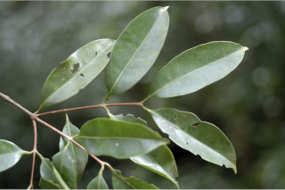
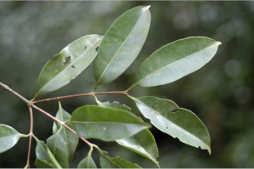
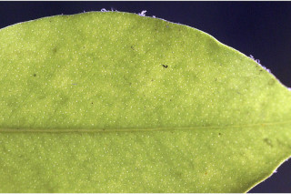
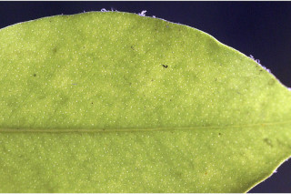

Small trees up to 8 m tall.
8 ಮೀ. ಎತ್ತರದವರೆಗಿನ ಸಣ್ಣ ಮರಗಳು.
Small trees up to 8 m tall.
சிறியமரங்கள் 8 மீ. உயரம் வரை வளரக்கூடியது.
Branchlets terete, glabrous.
ಎಳೆಯ ಕಿರುಕೊಂಬೆಗಳು ದುಂಡಾಗಿದ್ದು,ರೋಮರಹಿತವಾಗಿರುತ್ತವೆ.
Branchlets terete, glabrous.
சிறியநுனிக்கிளைகள் குறுக்குவெட்டுத் தோற்றத்தில் வளையமானது, உரோமங்களற்றது.
Leaves simple, opposite, decussate; petiole ca. 0.2 cm long, canaliculate, glabrous; lamina 3-9.5 x 1.3-4.5 cm, elliptic to narrow elliptic, apex caudate - acuminate with blunt tip, base acute to rounded, margin entire, pellucid gland dotted, coriaceous, glabrous; midrib canaliculate above; intramarginal nerve present; secondary_nerves 9-11 pairs, sometimes obscure; tertiary_nerves admedially ramified.
ಎಲೆಗಳು ಸರಳವಾಗಿದ್ದು ಅಭಿಮುಖವಾಗಿ ಜೋಡನೆಗೊಂಡಿದ್ದು ಕಾಂಡದ ಎರಡೂ ಕಡೆ ಎದುರು ಬದರಿನ ಲಂಬ ಸಾಲಿನಲ್ಲಿರುತ್ತವೆ; ತೊಟ್ಟುಗಳು 0.2 ಸೆಂ.ಮೀ. ಉದ್ದವಿದ್ದು ಕಾಲುವೆಗೆರೆ ಸಮೇತವಿರುತ್ತವೆ ಮತ್ತುರೋಮರಹಿತವಾಗಿರುತ್ತವೆ;ಪತ್ರಗಳು 3 –9.5 X 1.3 – 4.5 ಸೆಂ.ಮೀ.ವರೆಗಿನ ಗಾತ್ರವಿದ್ದು ಅಂಡವೃತ್ತದಿಂದ ಸಂಕುಚಿತ ಅಂಡವೃತ್ತದವರೆಗಿನ ಆಕಾರ ಹೊಂದಿದ್ದು, ಮೊಂಡಾಗ್ರವುಳ್ಳ ಬಾಲರೂಪಿ -ಕ್ರಮೇಣ ಚೂಪಾಗುವ ತುದಿ,ಚೂಪಾದುದರಿಂದ ದುಂಡಾದವರೆಗಿನ ಬುಡ,ನಯವಾದ ಅಂಚು,ಪ್ರಕಾಶ ಭೇಧ್ಯ ರಸಗ್ರಂಥಿ ಚುಕ್ಕೆಗಳನ್ನು ಹೊಂದಿದ್ದು ತೊಗಲನ್ನೋಲುವ ಮೇಲ್ಮೈ ಹೊಂದಿರುತ್ತವೆ ಮತ್ತು ರೋಮರಹಿತವಾಗಿರುತ್ತವೆ;ಮಧ್ಯ ನಾಳ ಪತ್ರದ ಮೇಲ್ಭಾಗದಲ್ಲಿ ಕಾಲುವೆಗೆರೆ ಸಮೇತವಿರುತ್ತದೆ, ಅಂಚಿನ ನಾಳಗಳು ಇರುತ್ತವೆ; ಎರಡನೇ ದರ್ಜೆಯ ನಾಳಗಳು 9 ರಿಂದ 11 ಜೋಡಿಗಳಿದ್ದು ಕೆಲವು ವೇಳೆ ಅಪ್ರಮುಖವಾಗಿರುತ್ತವೆ ;ಮೂರನೇ ದರ್ಜೆಯ ನಾಳಗಳು ಎಲೆಯ ಅಕ್ಷದ ಕಡೆಗೆ ಕವಲುಗೊಂಡಿರುತ್ತವೆ.
Leaves simple, opposite, decussate; petiole ca. 0.2 cm long, canaliculate, glabrous; lamina 3-9.5 x 1.3-4.5 cm, elliptic to narrow elliptic, apex caudate - acuminate with blunt tip, base acute to rounded, margin entire, pellucid gland dotted, coriaceous, glabrous; midrib canaliculate above; intramarginal nerve present; secondary_nerves 9-11 pairs, sometimes obscure; tertiary_nerves admedially ramified.
இலைகள் தனித்தவை, எதிரடுக்கமானவை, குறுக்குமறுக்கானவை; இலைக்காம்பு 0.2 செ.மீ. நீளமானது, குறுக்குவெட்டுத் தோற்றத்தில் கேனாலிகுலேட், உரோமங்களற்றது; இலை அலகு 3-9.5 X 1.3-4.5 செ.மீ., நீள்வட்ட வடிவானது முதல் குறுகிய நீள்வட்ட வடிவானது, அலகின் நுனி வால்-அதிக்கூரியதுடன் அதன் முனை மழுங்கியது, அலகின் தளம் கூரியது முதல் வட்டமானது, அலகின் விளிம்பு முழுமையானது, ஒளிபுகும் சுரப்பி புள்ளிகளுடையது, கோரியேசியஸ், உரோமங்களற்றது; மையநரம்பு மேற்புறத்தில் அலகின் பரப்பைவிட பள்ளமானது; விளிம்பு நரம்பு (இண்ட்ராமார்ஜினல் நரம்பு) கொண்டது; இரண்டாம் நிலை நரம்புகள் 9-11 ஜோடிகள், சிலசமயங்களில் கண்களுக்கு புலப்படாது; மூன்றாம் நிலை நரம்புகள் அட்மீடியல்லி ராமிபைடு.
Flowers solitary or in pairs, axillary or lateral, white.
ಹೂಗಳು ಒಂಟಿಯಾಗಿ ಅಥವಾ ಜೋಡಿಯಾಗಿದ್ದು ಅಕ್ಷಾಕಂಕುಳಿನಲ್ಲಿ ಅಥವಾ ಪಾರ್ಶ್ವದಲ್ಲಿರುತ್ತವೆ ಮತ್ತು ಬಿಳಿ ಬಣ್ಣ ಹೊಂದಿರುತ್ತವೆ.
Flowers solitary or in pairs, axillary or lateral, white.
மலர்கள் தனித்தவை அல்லது ஒர் ஜோடி, இலைக்கோணங்களில் காணப்படுபவை அல்லது பக்கவாட்டில் காணப்படுபவை, வெள்ளை நிறமானது.
Berry, globose, to 2 cm across, crowned with calyx lobes, glabrous; seed one.
ಬೆರ್ರಿ ಫಲಗಳು ಗೋಳಾಕಾರದಲ್ಲಿದ್ದು 2 ಸೆಂ.ಮೀ. ವರೆಗಿನ ಅಡ್ಡಗಲತೆಯನ್ನು ಹೊಂದಿರುತ್ತವೆ, ಮುಕುಟದಲ್ಲಿ ಪುಷ್ಪಪಾತ್ರೆಯ ಸಮೇತವಿದ್ದು ರೋಮರಹಿತವಾಗಿರುತ್ತವೆ ;ಬೀಜ ಒಂದು.
Berry, globose, to 2 cm across, crowned with calyx lobes, glabrous; seed one.
முழுச்சதைகனி (பெர்ரி), கோளவடிவானது, முதல் 2 செ.மீ. குறுக்களவுடையது, நிரந்தரமான புல்லி இதழ்களுடையவை, உரோமங்களற்றது; ஒரு விதையுள்ள கனி.


 


 
